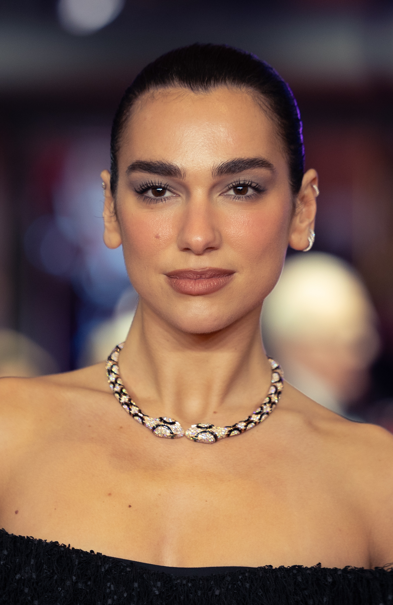
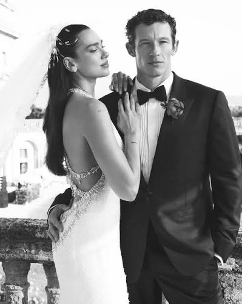

Née le 22 août 1995 à Londres, dans le quartier de Westminster, en Angleterre, Dua Lipa est la fille aînée de Dukagjin Lipa (né le 5 mars 1969), directeur marketing et chanteur principal du groupe de rock kosovar Oda, et de Anesa Lipa (née Rexha le 28 juin 1972), agent de voyages. Ses parents kosovars ont quitté Pristina en 1992 afin de s'installer au Royaume-Uni pour fuir les guerres de Yougoslavie. Elle est d'origine bosnienne du côté de sa grand-mère maternelle. Sa langue maternelle est l'albanais, mais elle parle aussi l'anglais avec un accent britannique. Son prénom « Dua » est une suggestion de sa grand-mère et signifie « amour » ou « j'aime » en albanais.
En 2013, Dua Lipa signe un contrat avec TaP Management, dirigé par Ben Mawson et Ed Millet, alors qu'elle travaillait comme serveuse dans un bar à cocktails. Elle est présentée à Ben Mawson par son avocat, qui l'a dissuadée de signer un autre contrat d'édition qui lui était proposé. Par la suite, ils lui offrent un salaire mensuel pour qu'elle quitte son emploi et se concentre sur l'enregistrement de musique. Au cours de l'une de ces sessions, Dua Lipa co-écrit le morceau Hotter than Hell, qui l'amènera finalement à signer un contrat d'enregistrement avec le label Warner Records en 2014. Le 21 août 2015, elle sort son premier single, New Love, produit par Emile Haynie et Andrew Wyatt.
Dua Lipa reçoit plusieurs distinctions au cours de sa carrière, notamment cinq Brit Awards pour treize nominations, un MTV Video Music Award pour quinze nominations, un American Music Award pour six nominations, un iHeartRadio Music Award pour huit nominations et trois Grammy Awards pour huit nominations. Elle a également reçu deux records du Livre Guinness des records ; en 2020 pour le plus grand nombre de billets vendus pour un concert diffusé en direct par une artiste féminine solo, et en 2021 pour le plus grand nombre d'auditeurs mensuels sur Spotify pour une artiste féminine, mais sans dépasser toutefois le pic historique atteint par Ariana Grande l'année précédente. Dua Lipa est nommée parmi les 100 personnalités les plus influentes en 2024 par le Time Magazine dans la catégorie artiste.
Dua Lipa prépare actuellement son quatrième album studio, projets annexes : Elle poursuit ses activités avec son club de lecture (Service95 Book Club), ses partenariats (Nespresso, Bvlgari) et sa présence remarquée dans la mode.
Tournage et rumeurs : Des rumeurs évoquent un tournage à Los Angeles et des indices énigmatiques partagés sur les réseaux sociaux (une voiture rouge, une boule de billard 7 et un dé affichant 1), laissant penser à une sortie ou une annonce imminente début 2027
Dua Lipa mène une vie personnelle marquée par ses origines albanaises, sa famille et ses relations amoureuses médiatisées.
Famille : Ses parents, Anesa et Dukagjin Lipa, sont des Albanais du Kosovo qui ont émigré au début des années 1990 pour fuir l'instabilité politique. Elle a une sœur (Rina) et un frère (Gjin).
Parcours géographique : Elle a passé une partie de son adolescence au Kosovo (à Pristina) avant de retourner seule à Londres à l'âge de 16 ans pour lancer sa carrière artistique
Elle est en couple avec l'acteur britannique Callum Turner depuis début 2024, et le couple s'est marié le 31 mai 2026 lors d'une cérémonie intime à Londres.

Dua Lipa est active sur ces réseaux sociaux, notamment sur Instagram, TikTok, Youtube où alors sur Spotify.